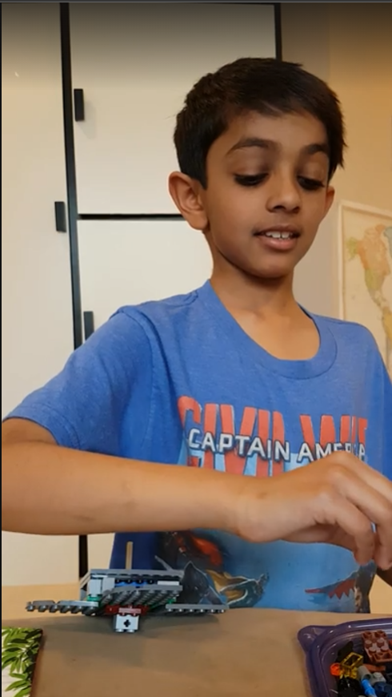

The problem/motivation
I was into Beyblades — the spinning-top battle toys — and instead of just playing with the store-bought ones, I wanted to see if I could design and build my own versions entirely out of LEGO.
How it works
Each beyblade was built low and flat out of LEGO bricks, with a pointed piece fixed to the bottom center so the whole build could balance and spin on that single point, just like a real beyblade. Getting one to spin well meant paying attention to how the weight was spread around that center point — a build that was lopsided would wobble and fall over instead of spinning cleanly.
Process
- Picked through a bin of LEGO pieces to find parts that could form a flat, balanced base.
- Attached a pointed piece to the bottom center as the spinning tip.
- Test-spun each build by hand, adjusting the design when it wobbled or wouldn't stay upright.
- Built more than one so they could be spun against each other, Beyblade-style.
Results
Ended up with a small set of homemade LEGO beyblades that could actually spin and hold their balance — a fun early exercise in weight distribution and balance, even if I didn't think of it that way at the time.
What I'd do differently
I'd experiment more deliberately with weight placement to get longer, more stable spins, and maybe try building a simple launcher instead of spinning them by hand.